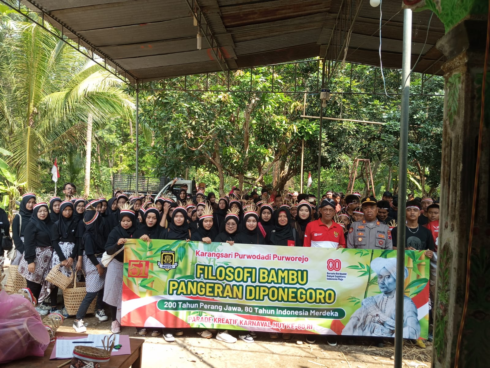

Pemuda Karangsari Purwodadi Meriahkan Karnaval HUT RI ke-80
Purworejo,23 agustus 2025
Pemuda dan pemudi Karangtaruna Desa Karangsari, Purwodadi, Purworejo dengan semangat tinggi turut serta dalam karnaval peringatan Hari Ulang Tahun Republik Indonesia ke-80 yang berlangsung di Alun-Alun Kabupaten Purworejo. Acara ini diikuti oleh berbagai elemen masyarakat dengan penuh kemeriahan.
Partisipasi ini mendapat dukungan besar dari Pengasuh Pondok Pesantren Al Azhar, KH. Mutammimul Masholih, yang ikut berkontribusi dalam bentuk donasi untuk memeriahkan kegiatan karnaval pemuda.
Kegiatan ini tidak hanya mempererat tali persaudaraan antarwarga desa, namun juga menjadi bentuk nyata rasa cinta tanah air serta kebersamaan dalam memperingati hari bersejarah bangsa Indonesia.
Dokumentasi lengkap acara bisa dilihat di sini: Tonton di YouTube
⬅ Kembali ke Beranda